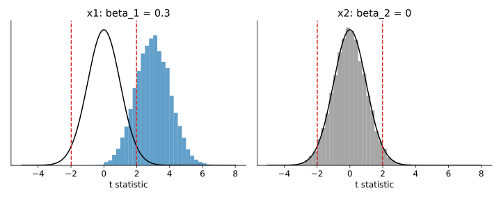
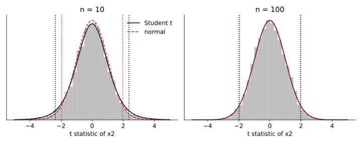
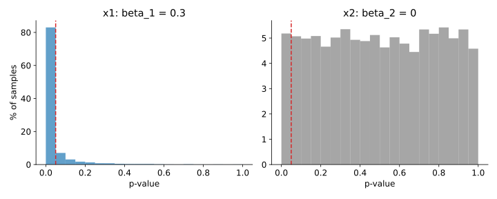

Articles · Econometrics
Inference in OLS Regression: t Statistics and p-Values
Every regression table reports a t statistic and a p-value next to each coefficient. This article explains where they come from, what they say about the population, and what they do not say. A simulation in which the true coefficients are known shows each step.
All estimates are computed from scratch with NumPy; SciPy provides only the Student t and normal distributions.
Population and sample
The population is the complete set of units we want to study (all firms, all workers, …). In the population
$$y = \beta_0 + \beta_1 x_1 + \dots + \beta_k x_k + u ,$$and the parameters \(\beta_j\) are fixed but unknown. A sample is a set of \(n\) units drawn at random from the population: on these units we observe \(y\) and the regressors, and we compute the OLS estimates \(\hat\beta_j\).
Throughout the article the population is
$$y = 1 + 0.3\,x_1 + 0\,x_2 + u ,$$where \(x_1\), \(x_2\) and \(u\) are independent standard normal variables: \(x_1\) has an effect on \(y\), \(x_2\) has none. The function ols returns the estimates, their standard errors, the t statistics and the p-values, which the next sections derive.
import numpy as np
from scipy import stats
B0, B1, B2, SIGMA = 1.0, 0.3, 0.0, 1.0 # x1 has an effect, x2 has none
def draw_sample(rng, n):
x1 = rng.standard_normal(n)
x2 = rng.standard_normal(n)
u = SIGMA * rng.standard_normal(n)
y = B0 + B1 * x1 + B2 * x2 + u
return y, x1, x2
def ols(y, *regressors):
X = np.column_stack([np.ones(len(y)), *regressors])
n, k1 = X.shape # k1 = k + 1 parameters
XtX_inv = np.linalg.inv(X.T @ X)
b = XtX_inv @ X.T @ y # (X'X)^-1 X'y
u_hat = y - X @ b # residuals
sigma2_hat = (u_hat @ u_hat) / (n - k1) # n - k - 1 degrees of freedom
se = np.sqrt(sigma2_hat * np.diag(XtX_inv))
t = b / se # t statistics for H0: beta_j = 0
p = 2 * stats.t.sf(np.abs(t), n - k1) # two-sided p-values
return b, se, t, pThree samples of \(n = 100\) from the same population give three different estimates:
rng = np.random.default_rng(1)
for s in range(3):
b = ols(*draw_sample(rng, 100))[0]
print(f"sample {s + 1}: b1 = {b[1]:6.3f} b2 = {b[2]:6.3f}")sample 1: b1 = 0.287 b2 = -0.014 sample 2: b1 = 0.134 b2 = -0.075 sample 3: b1 = 0.145 b2 = 0.212
\(\hat\beta_j\) is a random variable: it changes from sample to sample.
Inference
We observe one sample, but the question is about the population. Statistical inference draws conclusions about \(\beta_j\) from \(\hat\beta_j\), taking into account that \(\hat\beta_j\) varies from sample to sample. A hypothesis test compares two statements about \(\beta_j\), holding the other regressors fixed:
$$\begin{cases} H_0\colon \beta_j = 0 & x_j \text{ has no effect on } y \\ H_1\colon \beta_j \neq 0 & x_j \text{ has an effect on } y \end{cases}$$Is \(\hat\beta_j\) far enough from zero to reject \(H_0\)? To answer, we need the distribution of \(\hat\beta_j\) across samples.
Assumptions
We assume that the Gauss-Markov assumptions hold: linearity in parameters, random sampling, no perfect collinearity, zero conditional mean and homoskedasticity. In addition, we assume normality: the error \(u\) is independent of \(x_1,\dots,x_k\) and normally distributed, \(u \sim \mathcal N(0, \sigma^2)\).
If we treat the observed values of the regressors as given, the only source of randomness is \(u\), and the estimator is normal:
$$\hat\beta_j \sim \mathcal N\!\left(\beta_j,\ \mathrm{sd}(\hat\beta_j)^2\right), \qquad \mathrm{sd}(\hat\beta_j) = \frac{\sigma}{\sqrt{\mathrm{SST}_j\,(1 - R_j^2)}} ,$$where \(\mathrm{SST}_j = \sum_i (x_{ij} - \bar x_j)^2\) is the total variation in \(x_j\) and \(R_j^2\) is the \(R^2\) of the regression of \(x_j\) on the other regressors.
From normal to Student t
Standardising \(\hat\beta_j\) with the standard deviation gives a standard normal:
$$\frac{\hat\beta_j - \beta_j}{\mathrm{sd}(\hat\beta_j)} \sim \mathcal N(0,1) .$$But \(\mathrm{sd}(\hat\beta_j)\) contains \(\sigma\), which is unknown. We estimate \(\sigma\) from the residuals \(\hat u_i\) and obtain the standard error:
$$\hat\sigma = \sqrt{\frac{1}{n-k-1}\sum_i \hat u_i^2} , \qquad \mathrm{se}(\hat\beta_j) = \frac{\hat\sigma}{\sqrt{\mathrm{SST}_j\,(1 - R_j^2)}} .$$Standardising \(\hat\beta_j\) with the standard error gives a Student t with \(n-k-1\) degrees of freedom:
$$\frac{\hat\beta_j - \beta_j}{\mathrm{se}(\hat\beta_j)} \sim t_{n-k-1} .$$\(\hat\beta_j\) is normal, but the ratio is not: \(\hat\sigma\) also changes from sample to sample, which thickens the tails. As \(n\) grows, \(\hat\sigma \to \sigma\) and \(t_{n-k-1} \to \mathcal N(0,1)\).
The t statistic
Under \(H_0\colon \beta_j = 0\), the t statistic counts the standard errors between the estimate and zero:
$$t_{\hat\beta_j} = \frac{\hat\beta_j}{\mathrm{se}(\hat\beta_j)} = \frac{\hat\beta_j\,\sqrt{\mathrm{SST}_j\,(1 - R_j^2)}}{\hat\sigma} \ \sim\ t_{n-k-1} .$$The second expression shows what makes \(|t|\) large: a large effect \(|\beta_j|\), a small error variance \(\sigma^2\), a large sample and much variation in \(x_j\) (a large \(\mathrm{SST}_j\)), and little correlation with the other regressors (a small \(R_j^2\)).
Rejection rule and p-value
Rejection rule. We reject \(H_0\) at significance level \(\alpha\) if \(|t_{\hat\beta_j}| > c\), where the critical value \(c\) leaves \(\alpha/2\) in each tail of \(t_{n-k-1}\). If \(H_0\) is true, the test rejects it by mistake with probability \(\alpha\). With \(n = 100\) and \(k = 2\) there are 97 degrees of freedom:
df = 100 - 2 - 1
for alpha in (0.10, 0.05, 0.01):
print(f"alpha = {alpha:.2f} c = {stats.t.ppf(1 - alpha / 2, df):.2f}")alpha = 0.10 c = 1.66 alpha = 0.05 c = 1.98 alpha = 0.01 c = 2.63
p-value. The p-value is the probability, if \(H_0\) is true, of obtaining a t statistic at least as large in absolute value as the one observed, \(p = \Pr(|T| \geq |t_{\hat\beta_j}|)\) with \(T \sim t_{n-k-1}\). We reject \(H_0\) at level \(\alpha\) exactly when \(p < \alpha\).
One sample
We draw one sample of \(n = 100\) from the population and estimate the model by OLS:
y, x1, x2 = draw_sample(np.random.default_rng(2026), 100)
b1s, se1s, t1s, p1s = ols(y, x1, x2)
c = stats.t.ppf(0.975, 97)
print(f"{'':10s}{'estimate':>9s}{'std. error':>12s}{'t':>8s}{'p-value':>9s} significant")
for name, bj, sj, tj, pj in zip(["intercept", "x1", "x2"], b1s, se1s, t1s, p1s):
pv = f"{pj:9.3f}" if pj >= 0.001 else f"{'<0.001':>9s}"
sig = "yes" if pj < 0.05 else "no"
print(f"{name:10s}{bj:9.3f}{sj:12.3f}{tj:8.2f}{pv} {sig}")
print(f"critical value at 5%: {c:.2f}")estimate std. error t p-value significant intercept 1.104 0.101 10.93 <0.001 yes x1 0.367 0.099 3.70 <0.001 yes x2 -0.099 0.087 -1.14 0.259 no critical value at 5%: 1.98
- For \(x_1\), \(|t| = 3.70 > 1.98\) and \(p < 0.001\): we reject \(H_0\).
- For \(x_2\), \(|t| = 1.14 < 1.98\) and \(p = 0.259 > 0.05\): we do not reject \(H_0\).
Is this evidence about the population, or is it driven by this particular sample?
Repeated sampling
In a simulation we can answer the question directly:
- Draw \(n = 100\) observations from the population.
- Compute \(\hat\beta_j\), \(\mathrm{se}(\hat\beta_j)\), \(t\) and \(p\); the coefficient is significant if \(p < 0.05\).
- Repeat steps 1 and 2 for \(B = 10{,}000\) samples.
- Compute, across the \(B\) samples, the mean and the standard deviation of the estimates, the mean standard error and the share of significant samples:
where \(\mathbf{1}(\cdot)\) equals 1 if the condition holds and 0 otherwise.
R, N = 10_000, 100
rng = np.random.default_rng(1)
B, SE, T, P = (np.empty((R, 3)) for _ in range(4))
for r in range(R):
B[r], SE[r], T[r], P[r] = ols(*draw_sample(rng, N))
print(f"{'':4s}{'beta':>6s}{'mean b':>9s}{'sd b':>8s}{'mean se':>9s}{'significant':>13s}")
for j, beta in ((1, B1), (2, B2)):
share = 100 * (P[:, j] < 0.05).mean()
print(f"x{j} {beta:6.1f}{B[:, j].mean():9.3f}{B[:, j].std():8.3f}"
f"{SE[:, j].mean():9.3f}{share:12.1f}%")
as_extreme = 100 * (np.abs(T[:, 2]) >= abs(t1s[2])).mean()
print(f"x2: |t| >= {abs(t1s[2]):.2f} in {as_extreme:.1f}% of the samples")beta mean b sd b mean se significant x1 0.3 0.301 0.102 0.101 83.0% x2 0.0 -0.001 0.103 0.102 5.2% x2: |t| >= 1.14 in 25.7% of the samples
The two estimates have the same precision, and the mean standard error matches the standard deviation of the estimates: the formula for \(\mathrm{se}(\hat\beta_j)\) measures the variation from sample to sample correctly. The answer to the test, however, changes from sample to sample. \(x_1\) is significant in 83.0% of the samples, \(x_2\) in 5.2%, although it has no effect. In 25.7% of the samples \(|t_{\hat\beta_2}| \geq 1.14\), close to the p-value of 0.259 computed from the single sample.
Simulated t statistics
import matplotlib.pyplot as plt
grid = np.linspace(-5, 8, 500)
fig, axes = plt.subplots(1, 2, figsize=(10, 4), sharex=True, sharey=True)
for ax, j, title in zip(axes, (1, 2), ("x1: beta_1 = 0.3", "x2: beta_2 = 0")):
ax.hist(T[:, j], bins=np.arange(-5, 8.01, 0.25), density=True,
color="C0" if j == 1 else "grey", alpha=0.7)
ax.plot(grid, stats.t.pdf(grid, 97), color="black") # distribution under H0
for s in (-1, 1):
ax.axvline(s * c, color="C3", ls="--")
ax.set(title=title, xlabel="t statistic", yticks=[])
plt.tight_layout()
plt.show()
- For \(x_1\), the histogram is centred near \(\beta_1/\mathrm{sd}(\hat\beta_1) = 0.3/0.102 \approx 3\), and 83.0% of the samples fall beyond the critical values.
- For \(x_2\), the histogram overlaps the \(t_{97}\) density, and only the 5.2% of samples in the tails are significant.
Significance depends on the effect relative to its standard error: with the same precision, the larger effect is significant in more samples.
Student t → normal
To see why the critical values come from the Student t, we repeat the simulation for \(x_2\), whose true effect is zero, with \(n = 10\) and \(n = 100\), and count the significant samples with the critical value of the Student t and with the normal value 1.96:
rng = np.random.default_rng(3)
z = stats.norm.ppf(0.975)
t_x2 = {}
for n in (10, 100):
t_x2[n] = np.array([ols(*draw_sample(rng, n))[2][2] for _ in range(R)])
c_n = stats.t.ppf(0.975, n - 3)
print(f"n = {n:3d}: c Student = {c_n:.2f}, c normal = {z:.2f}; significant "
f"{100 * (np.abs(t_x2[n]) > c_n).mean():.1f}% with Student, "
f"{100 * (np.abs(t_x2[n]) > z).mean():.1f}% with normal")n = 10: c Student = 2.36, c normal = 1.96; significant 4.9% with Student, 8.6% with normal n = 100: c Student = 1.98, c normal = 1.96; significant 4.7% with Student, 4.9% with normal
grid = np.linspace(-5, 5, 500)
fig, axes = plt.subplots(1, 2, figsize=(10, 4), sharex=True, sharey=True)
for ax, n in zip(axes, (10, 100)):
c_n = stats.t.ppf(0.975, n - 3)
ax.hist(t_x2[n], bins=np.arange(-5, 5.01, 0.25), density=True,
color="grey", alpha=0.5)
ax.plot(grid, stats.t.pdf(grid, n - 3), color="black", label="Student t")
ax.plot(grid, stats.norm.pdf(grid), color="C3", ls="--", label="normal")
for s in (-1, 1):
ax.axvline(s * c_n, color="black", ls=":")
ax.axvline(s * z, color="C3", ls=":")
ax.set(title=f"n = {n}", xlabel="t statistic of x2", yticks=[])
axes[0].legend(frameon=False)
plt.tight_layout()
plt.show()
At \(n = 10\) the tails are thicker than those of the normal: using 1.96 instead of 2.36 flags a non-existent effect in 8.6% of the samples instead of 4.9%. At \(n = 100\) the two distributions coincide, and so do the critical values.
Simulated p-values
fig, axes = plt.subplots(1, 2, figsize=(10, 4), sharex=True)
for ax, j, title in zip(axes, (1, 2), ("x1: beta_1 = 0.3", "x2: beta_2 = 0")):
ax.hist(P[:, j], bins=np.arange(0, 1.0001, 0.05), weights=np.full(R, 100 / R),
color="C0" if j == 1 else "grey", alpha=0.7)
ax.axvline(0.05, color="C3", ls="--")
ax.set(title=title, xlabel="p-value")
axes[0].set_ylabel("% of samples")
plt.tight_layout()
plt.show()
print(f"x1: p < 0.05 in {100 * (P[:, 1] < 0.05).mean():.1f}%, "
f"p < 0.01 in {100 * (P[:, 1] < 0.01).mean():.1f}%")
print(f"x2: p < 0.05 in {100 * (P[:, 2] < 0.05).mean():.1f}%")
x1: p < 0.05 in 83.0%, p < 0.01 in 62.9% x2: p < 0.05 in 5.2%
- For \(x_1\), the p-values pile up near zero: \(p < 0.05\) in 83.0% of the samples and \(p < 0.01\) in 62.9%.
- \(x_2\) has no effect, yet each interval of width 0.05 contains about 5% of the samples, and \(p < 0.05\) in 5.2% of them. These are false positives, and their rate equals the significance level: if \(H_0\) is true, the p-value is uniformly distributed between 0 and 1.
Misreading p-values
- The p-value is not the probability that \(H_0\) is true. It is computed assuming that \(H_0\) is true.
- Not rejecting is not accepting. \(x_1\) has an effect, yet it is not significant in 17.0% of the samples.
- The p-value does not measure the size of the effect. With enough data, an economically negligible effect is statistically significant.
- Significance depends on \(\alpha\), which is a convention: 5% is common, not a law.
Takeaways
- \(\hat\beta_j\) is a random variable: inference draws conclusions about the population from one sample.
- The t statistic counts standard errors: \(t = \hat\beta_j/\mathrm{se}(\hat\beta_j)\) follows \(t_{n-k-1}\) under \(H_0\) and is close to \(\mathcal N(0,1)\) in large samples.
- Significance depends on the effect relative to its standard error.
- If \(H_0\) is true, \(p < \alpha\) in a share \(\alpha\) of the samples: false positives are part of the procedure.
- The p-value measures the evidence against \(H_0\): it is the probability, if \(H_0\) is true, of a t statistic at least as large in absolute value as the one observed. We reject \(H_0\) when \(p < \alpha\).
Reference: J. M. Wooldridge, Introductory Econometrics: A Modern Approach, 7th ed., Cengage, 2020. All data are simulated.